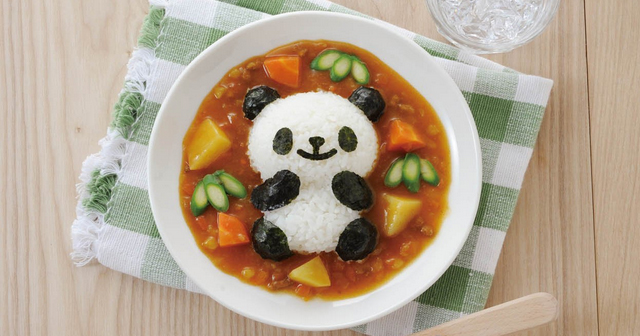

Curry Rice

Description
Japanese curry or カレー is a thick curry with a stew-like consistency and commonly includes a protein, sweet onions, carrots, and potatoes.
Ingredients
- Japanese Curry Roux
- 1x Apple
- 1x Carrot
- 1x Potato
- 1x Onion
Steps
- Dice ingredients
- Put the vegetables to boil
- In a seperate large pan, stirfry onion
- When onion turns golden brown, pour the boiled vegetables into the pan
- Add roux and stir well
- The curry is now ready!
- Serve with rice and freshly plucked Panda from the zoo
- Itadakimasu~! Enjoy your meal!